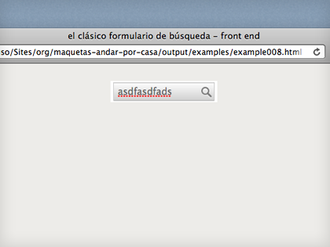

el clásico formulario de búsqueda
A todos nos suena este tipo de buscadores compactos, tan monos, situados normalmente en sidebars o en cabeceras. Podemos hacerlos sin perder elegancia a la hora de codificarlos.
Alrededor de un formulario tienes unas cuantas etiquetas con las que poder jugar. El marcado podría quedar tan limpito como esto:
<form action="#" method="post" id="search">
<fieldset>
<label for="q">Buscar</label>
<input type="text" name="q" value="" id="q"/>
<button type="submit">Vamos!</button>
</fieldset>
</form>
Yo además estoy viviendo mi historia de amor particular con los buttons, tienen muchísimas más posibilidades de formateo y son mucho más estables entre navegadores... excepto por algunos problemillas, nada irresoluble :)
- Para los problemas de extra width y extra padding de explorer hay solución.
- Y si firefox se te pone pesadito con paddings raros se le pone esto y todo arreglado.
A jugar con el ejemplo.